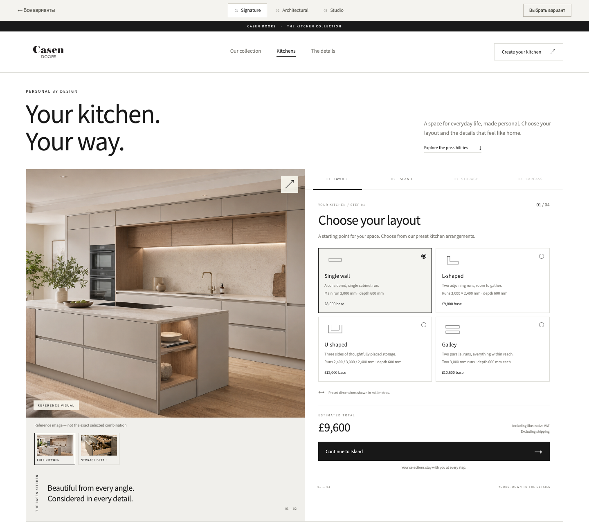
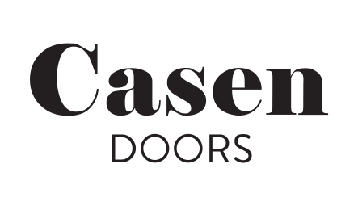
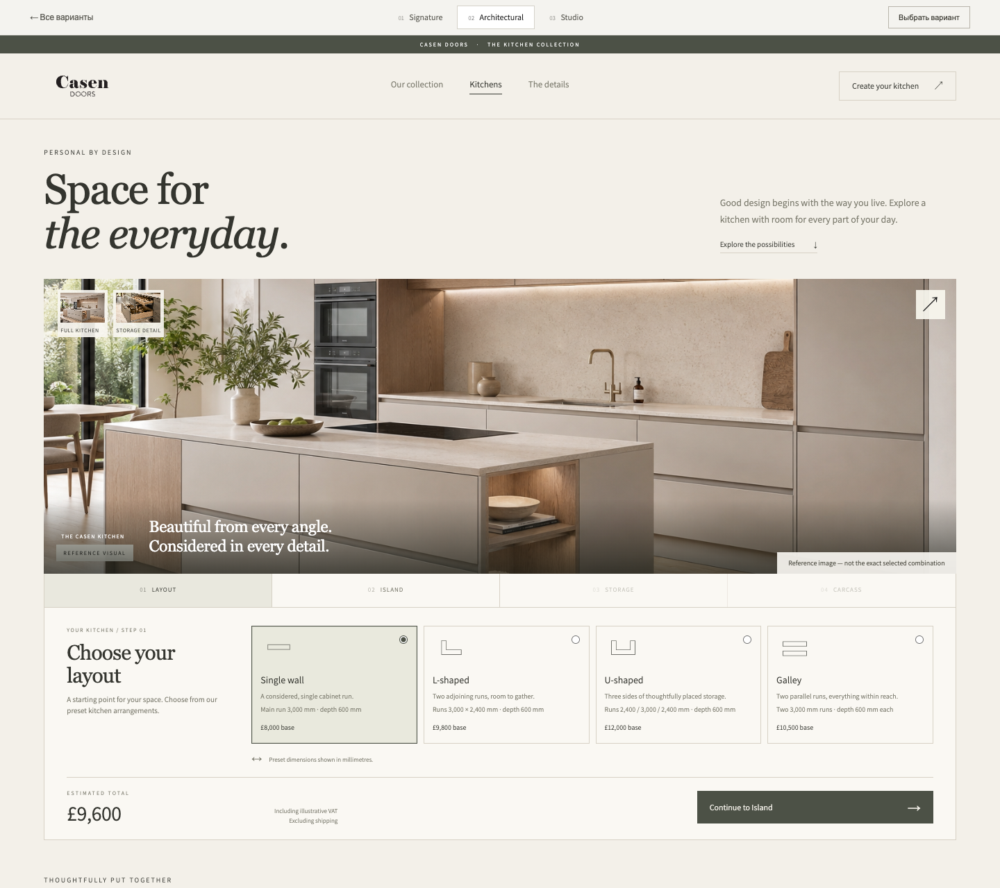
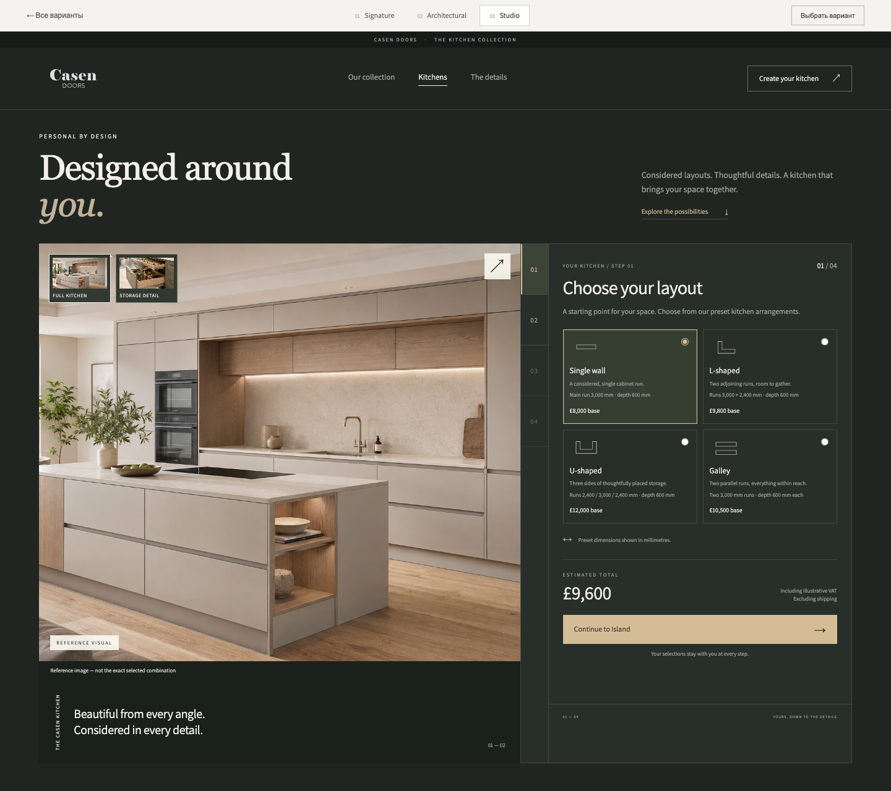

01Signature
White, clear and familiar.
A clean product-page layout, with a generous kitchen image and options on the right. The closest direction to the current Casen Doors website.

KITCHEN CONFIGURATOR / DESIGN DIRECTIONSThree visual directions for the Casen Doors kitchen configurator. Open each desktop and mobile preview to compare the layouts and choose the approach that feels right for your brand.

01A clean product-page layout, with a generous kitchen image and options on the right. The closest direction to the current Casen Doors website.

02A warm, architectural direction. A panoramic kitchen image leads into a horizontal configuration panel, with a softer palette and serif headlines.

03A dark, contrasting canvas with a large kitchen image, compact controls and a vertical step rail. Warm accents keep the experience connected to the materials.
Please reply with your preferred direction: 01 Signature, 02 Architectural or 03 Studio.
Design concepts for review. Prices, dimensions and VAT shown in the previews are illustrative. Kitchen images are references from the supplied prototype and do not depict every selected combination. Final catalogue content and imagery will be supplied separately.
This presentation opens locally without a server. Preview images show the proposed interfaces; the interactive local prototypes are separate.